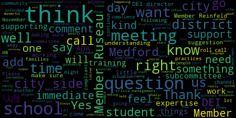
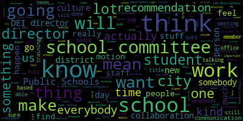
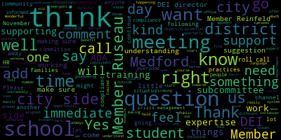
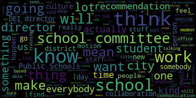

total time: 10.51 minutes
total words: 1858

{kind=link}
total time: 7.58 minutes
total words: 1140

total time: 28.19 minutes
total words: 3944

[SPEAKER_04]: See you later. Hi, everybody.
[Olapade]: How are we all doing today? Wonderful, wonderful. All right. So I think we might as well jump in if we're all good to go. I just want to make sure that we're recording. All right. So I will call us. Thank you. So I will call us to order. Please be advised that on Tuesday, November 19th, 2024 at 5pm, there will be a diversity equity inclusion subcommittee meeting held through remote participation via Zoom. This meeting is being recorded. The meeting can be viewed live on the Medford Public Schools YouTube channel through Medford Community Media on your local cable. That's Comcast channel 9822 and Verizon channels 4345 and 47. Since the meeting will be held remotely, participants can log in or call in by using the following link or call-in number. The meeting ID number is 943-9056-5846. Additionally, questions and comments can be submitted during the meeting by emailing aolapade, that's a-o-l-a-p-a-d-e, at medford.k12.ma.us. Those submitting must include the following info, your first and last name, your Medford street address, and then your question and or comment. Our agenda tonight is being resolved as motioned at the November 4th, 2024 regular school committee meeting. The following resolution was moved for further discussion to this subcommittee. 2024-40 offered by Mayor Lungo-Koehn, consolidation language for diversity, equity, and inclusion, DEI support, whereas the city's DEI director and ADA coordinator is supporting school ADA, DEI, crisis management, HR, and training needs by being a resource to the school administration team. I'm going to go ahead and call the roll to make sure we are all here and we'll get started. So, Member Reinfeld?
[Reinfeld]: Present.
[Olapade]: Member Ruseau?
[Ruseau]: Present.
[Olapade]: and member Olapade. Present. That's three present, zero absent. We're good to go. So thank you for that. So I think to start, I'll add some immediate thoughts from the meeting that had us call to this subcommittee meeting, which was some questions and some, I think, clarification about the current practices of leaning on the city's DEI director and how she's been offering her support and expertise on questions about these. different circumstances and how best we can continue to support the school district. I think the most immediate question for at least myself was are we preparing other staff for example with these you know these practices and trainings so they can then go into the community and go into the school district community and support when our DEI director from the city side is not available per se as well as are we Is there a potential to have another staffer, a date in that process. Some of the things that also came up was. The pros in my mind were that there might be broader expertise, having someone on the city side who understands the state's suggestions and mandates and policies and procedures of these practices, who can help implement them in the school system. Are we aligning the school districts, DEI, ADA, crisis management, HR, in trainings? Are they aligned with the city's mission as well? we're resource sharing as well, which I think is incredibly important when we understand how are we implementing them properly. The question I think most immediate for me is that, is there a prioritizing of time? I think that these issues are incredibly diverse and they are ever changing. And so I don't want the city's DEI director to be taken away from her responsibilities day to day if there's opportunity for her to work in tandem with potentially another employee on the city side or on the school side who can prioritize that day-to-day and they can work together to make sure things are aligned, whether it's a full-time staffer or maybe a contractor that's meeting on a, let's say, quarterly basis or bi-quarterly basis, for example. Those are the most immediate questions that I have, and I would ask my colleagues if they have any other considerations they'd like to add before we kind of open it up for further discussion.
[Reinfeld]: I think Member Olapade summarized it well. I think it would be good for this committee to understand what has been happening, what the need is, and what that intersection looks like in terms of building capacity within the district, understanding that there is very particular training that Director Nwaje has that people in the school district don't have, and just really making the best use of people's time and expertise in a really collaborative way that make sure that everyone who needs to be supported is supported on both sides of things.
[Olapade]: Member Ruseau?
[Ruseau]: Thank you. And I did voice this during the school committee meeting. And I do have, you know, when school committee members are onboarded, we go through a training and there's a lot of focus on what we do not have access to. And so, you know, the employees of Medford public schools are not employees of the city of Medford. And so I'm concerned about setting a precedent where somebody who is not an employee of Medford Public Schools is, and this is not a, say something about Francis, who I think I have a great relationship with, but I am concerned that we, do we even have any kind of, any document in place that authorizes somebody who is not part of the school system. And also, I have no idea since we don't get a report, which makes sense because we this doesn't seem like the kind of stuff that stuff that that Francis has been involved in doesn't seem like the stuff we would get a report on. But I am curious if there has been any involvement with student related issues and not students like the global, the generalized students, but individual students. Because again, when we go for our training, we are kind of beaten into us a bit. that we can never ask for anything about any individual students. We have no rights to know anything about individual students in our district. And so those are some of my concerns that I'm not saying those things have not been worked out, but they're not worked out in a way where I have any insight or knowledge of. So those are some of my thoughts.
[Olapade]: Right. I think another moment, I think also the question about availability, I think is a big part of it's something that I think we've run into is making sure that we are as available to the student population and their immediate families and related relations outside of that. Are we supporting them, not just in the most emergent situations but I think outside of most emergent situations and making sure that we're maintaining that relationship after you know potential incidents have occurred or make sure that we're complying long term. And again, I think because these issues are ever changing, it feels as though. having a better understanding about how we are diverting time away from the city side of these initiatives and these trainings that the DEI office is pursuing. Are we taking time away from them to pursue those from the city side to this district? And then is that happening on the other side, the other way around? And I think that just having a better understanding about how much that's been happening thus far and is that compliant or consistent with our values as a district is also something that I'd like to hear about too, about the time management, questions I think we're all having as well. So if our director would like to chime in or anyone on the school side that feels like they have some insight would be really appreciated I think.
[Edouard-Vincent]: I would love to let Ms. Nwaje Francis weigh in on how she has been supporting the schools. And, you know, I did make comments on November 4th, but I think the fact that she's here, she should be able to speak to the work that she has done and answer any of your questions directly.
[Reinfeld]: I think that's fantastic. The language in this resolution is very vague, and so I am very eager to know how we are to know the details. So thank you for being here, Frances.
[Nwajei]: Well, thank you all for inviting me. I welcome the opportunity to talk about my role as what is, you know, currently known as the DEI Director, Diversity, Equity and Inclusion is the terminology that has been used over the past five to seven years, evolving from the real name, which is the Office of Affirmative Action, Equal Opportunity and Civil Rights. And I raise that because that's how I was trained. I was trained as a civil rights representative. What does that mean in a nutshell? It means that whatever space I am in, I am required to know which of the titles I need to apply and apply them to ensure the compliance for that space. So whether it's the schools, the municipal, a private entity, or even a family owned business of more than 50 people. One of the things that I do want to do is make sure that you can rest assured, I do not have access to student information, nor would I ever, nor would anybody in this role ever require access to student information. Like you said, it's very vague, right? But it's not, the details aren't there. But let's just say a call comes in and I'm told that, you know, hateful imaging or, you know, on choice words have been discovered, it is important to know more of the ethnic identity of the person that did the discovery as a way of, you know, collaborating and planning support versus knowing the name and who they are and, you know, what, none of that comes into play. And that goes along to say with student files, those, that information does not come to play. I only know about students when they meet me and they introduce themselves to me or they invite me. And case in point, the GSA group at the high school. I don't encroach on their time. I wait for their invitation for me to join their groups and I show up and provide them with the support that they need or just be a listening ear if that is their choice. The only time that it would be necessary for me to know the identity of a student was in the very extreme case. Now, I'm speaking under the ADA law. The school had, let us say, a deaf, not hard of hearing, but a deaf-blind student who required ASL interpretation. That requires a different form of signing, that is in-hand signing. And as you know, ASL interpreters are hard to come by, let alone interpreters that have the ability to sign in hand. I need that information, not for myself, but I need to list that individual just as I list community members' names on the request that I send out to MCDHH. So, you know, those are the extreme parameters. So, for, you know, those of us that are hearing those of us that could be tuned in. I want to make sure that, you know, that the director does not have, nor would the director have unnecessary access to student information. And additionally, understand that I'm bound by the strictest laws of confidentiality, which in turn pose their own issues, right? I need to make certain decisions and I'm required to make those decisions by sharing the least amount of information possible, regardless of who I am making those decisions about and who I am informing. So I always have to keep that in the back of my mind because I deal with highly sensitive information to the point where the facts actually comes directly to me and doesn't go to a general delivery because I deal with people's medical providers. I'm sorry, Member Reinfeld, I just saw you raise your hands.
[Reinfeld]: No, I just, I'm curious, are you a mandated reporter?
[Nwajei]: Yes, all those things. Great. I just, I am a mandated reporter as well. So, I don't, you know, civil rights hat doesn't, it doesn't, you don't get to take it off, you know, unfortunately you wear it you straightening it up in the morning before you leave the house so that it looks good and proper. So, and really the role is to be that mediator, right? If we're not at compliance, why aren't we at compliance? And how can we get there? And what can we do? It's truly a partnership. It's truly a collaborative effort because I do have to work. in partnership with the administrators at the school. I learned from them and I learned from the teachers and as a result, I then better understand what the need is and how I can be a support to them. My trainings are ongoing. It looks like the EOC and the DOL and the ADA, are all colliding as far as the allures go, right? There's a lot of intersectionality that is happening at this current time. I was in a training session for the EEOC last month, the exact same training that I took in July. And lo and behold, something miraculously has now changed. You know, you don't stop the learning. It is ongoing. There is no one place to go and get the information. I am fortunate that I have, I had great trainers for when I first started my role so I have a network and if I am stuck, I can quickly access my network. But there is no such thing as knowing it all. And in many situations what might apply for Member Olapade might apply very differently for Member Reinfeld and then by the time I get to you Member Ruseau, it's completely off the books because it no longer exists. A law changed somewhere and you didn't get the memo. You know, it is, I'm dealing with life, right? And when you're dealing with life, it is extremely fluid. And one of the greatest things that you can bring to the role is your willingness to be flexible. A DEI practitioner and a civil rights expert, there is no end site. We don't do our work because we're going to see the results of our work. No, we do our work because we're determined to continue to push for change, change that is needed on many different levels and change and support for all people. There is no equity if you don't have equality. And I feel like that is often misunderstood. And my role is unique enough that it does allow me to have conversations with entities that would typically not be willing to hear what needs to be said, such as, there is a need for this training and I need you and your members to engage in this, right? If admin or management attempts to have that support, oh, it's a directive. It's this, you know, so this role is unique enough to allow for those types of relationship management. I can't remember. I don't know if there are any more direct questions. You would like to ask you were worried about time. I was well groomed for this I came from supporting 6000 plus full time employees on my own so you know differences, different entities were in place all around. But it is, again, you don't look at what you can't do, you look at what do you have and what you have the ability, what can you make of it at this point in time? And the ability to prioritize is key. You have to know what is your hot button and what you must deal with. When to use an email to say, hey, I got your voicemail, we'll get back to you in such and such time. them, where to go to find the resources, who to call if you're in the jam. Those things aren't necessarily written in the book. They come as part of doing this work on an ongoing basis. And as a civil rights person, you never say no, even if you might wonder, why on earth did this call come to me? Well, the call came to you because somebody needed somebody to talk to. And even if it's a gentle handoff that you do, that's what you do. So remember receipts.
[Ruseau]: Thank you. I really appreciate that information about students. And I wasn't assuming you did, but I also felt it was our responsibility to know that. So I feel really much better knowing that. I greatly appreciate the clarity. Would you? be able to estimate, which after everything you just said, the answer is, it depends on the day, I'm sure, is the answer. But how much time are you spending on school-related, if you can come up with an average, which sounds like an impossible request.
[Nwajei]: I'm not so sure that I could say that it's an average, but what I can tell you is that I chatted with my colleague over at the school yesterday, and today I chatted with my same colleague over at the school, and we're only on Tuesday, and it's two different things. And it's, yeah, it's two completely different things. The thing that we were supposed to chat about yesterday, we chatted about, but something else was involved too that just came up. It would be really, really difficult for me to give an estimate because, you know, chatting with my, you know, collaborative partner over there is very different from when I'm doing my research for what is needed based on documentation that somebody's medical provider has submitted, right, or conversations about, like, planning, you know, for an event that is about to happen. But I can safely say that at least once a week, fortunately or unfortunately, my partners hear from me. And it could be anything. It's also resources for me that I need as well. Like, hey, you know, I've got this grand idea. I want to do this, this, and this. You know, is there anybody that can help me with that? So it's really, it's two ways. So it's a give and a take.
[Ruseau]: And who do you have a specific collaborator at in the school system?
[Nwajei]: So usually I would say that I have more day-to-day conversations with Janine over in HR, those are my convos, but they're my go-to people for certain things, right? I could come across something and send it to our Director of Student Services, Joan, and sometimes I could actually need Joan's help in answering a question. Sometimes, you know, I could be looking for the superintendent and the superintendent is dealing with something else. So I'm reverting to either Dr. Cushing or Dr. Galluzzi. So it depends on the actual nature of, you know, the reason for like my outrage.
[SPEAKER_04]: Thank you.
[Reinfeld]: Yeah, I was going to ask if you can't do hours, is there a way to estimate what percentage of the time or what I'm trying to do, because we're being asked to put this into the school budget, which I think is a very fair request. And so trying to figure out, I know that we can't But a value on this but to figure out in a proportionately and looking across the system at how this how this shakes out in terms of what time the staff would be spending. scrambling around to get answers versus you having answers more at the ready and just kind of the percentage or what this looks like if you know I think we are blessed to have a resource in house like this and.
[Nwajei]: It's just, I would have to really think about it further because I would not want to provide you with misinformation. You know, for example, the ADA, right? A request came through for an accommodation, right? That took about 10 to 15 minutes. Why exactly what the person needed, the doctor had written. Guess what? You think you're all done and your file is closed. Actually, it's not. You go to your two week check-in and all of a sudden, there are different things that have gone on with this person, this person is no longer on site, which means that when they return, you will now have to begin the process again. You know, so it is, it's difficult to say that it's 10% or it's 20% because I don't really, I don't really, you know, chart it in that manner. There are standard check-ins that, you know, I will do. If I have, you know, a group of people, I will just, you know, make my one phone call and be on, you know, suck up a couple of hours if she needs time, get in my update on everybody and who needs what and how, you know, everything is going. But there are things that require, you know, on-site. Every, you know, every employee is entitled to the opportunity to request a reasonable accommodation, that is the law, right? So, guess what? People usually ask, oh, can you send the ADA paperwork? No, it doesn't work that way. I'm sorry, I can't send it. I need to do my due diligence to ensure that I give you the opportunity for an interactive dialogue. Um, some interactive dialogues, just they don't end because people need more hand holding and others are more straightforward, but it doesn't end there. It's still open until all the information comes in. And sometimes the information comes in and that's still not clear. It's like, hey, do me a favor, can you reach out to your doctor and let them know to expect a call from me or things of that nature. And then there is the actual dialogue that takes place with the employee. Remember, I have to be cognizant that some of our employees are in collective bargaining units. So when people are offering me their lunch times to meet and their break times to meet, absolutely not. It won't be said that the DEI director stopped you from having your lunch. So I usually meet during their periods, or at that time, I revert to what I called school time. I meet during the parameters of the school time. And that's part of my work day. So it is very, very difficult for me to say like, oh, it's 10%, 15%. I mean, out of the blue, I've received a call from a parent. who was having custody issues but from speaking with the parent I was able to help her understand that the real issue is not the school, the real issue is the fact that the address listed is not the address where the child lays their head, despite the very valid reasons. I didn't ask, how did you reach out to me? Why did you reach out to me? There's somebody on the phone that's in crisis. What do you do? You minimize, you mitigate the crisis.
[Reinfeld]: Another question, you mentioned having an idea and coming to discuss that. Again, in the trying to understand what all of this is a resource for and is supporting what that means, what's the balance around things that you are responding to requests from within the school community versus bringing things to the attention versus just the routine follow-up?
[Nwajei]: I would say that there is definitely more on the response side. That was the sense I got, certainly. There is definitely more on the response side when you have employee to employee allegations that involve alleged violations of civil rights, right? Who is the civil rights officer? for the city of Medford. That is hands down who's involvement they're going to ask for, right? They don't look at whether you're a school department, how is this- And I know HR wants that.
[Reinfeld]: I ran into Janine when I was on campus.
[Nwajei]: Okay, okay.
[Reinfeld]: There are these things that I cannot touch and I should not touch and we absolutely
[Nwajei]: Yeah. So I, you know, I'm trying to be, you know, trying to be delicate. Yeah. So hands down, I'm supporting 100%. I mean, that is what the role calls for. You sort everything else out afterwards. Or sometimes in, you know, parents who are, whose interpretation of certain rules or certain decisions are slightly skewed, your role is to mitigate the issues so that there is clarity and then people have an understanding to move forward in the work. Sometimes it might be teachers who think that they're being Treated differently, and it just takes having a conversation with a different entity for them to understand that you're not being treated differently. You're not being asked to do anything that is outside the scope of your job.
[Reinfeld]: Well, I think that that was kind of what I was getting at or wondering about at in terms of building capacity within the district because there is so much work we can do on so many of these fronts, whether it's a physical constraint a cultural constraint a situational something that arises in terms of being responsive to what's happening, but also building awareness of resources, of best practices, and all of that, both in terms of our administration, but also the staff and the employees more generally. So I think we have an opportunity, as we say, we have an opportunity to work with Director Nwaje on what DEI looks like in our district. I'm wondering what that opportunity is and whether it's, you know, it is, no, it's really, this is about compliance or this is about the opportunity to do more and make our district a better, more welcoming, more compliant place, which I think is something we would all love to do and to have really built into that culture from the moment of onboarding, really from recruitment on.
[Nwajei]: I smile because you mentioned recruitment and my collaborative partners on this call have entertained me and allowed me to you know, bear apart and help support recruitment. I recently received an email out of the blue from, I don't know if it's a resident, but somebody who identified themselves as being a parent. I think they're a Medford resident wanting to know what Medford Public Schools is doing as far as recruiting, you know, more diverse teachers. And thankfully, because of the collaborative partnership that we have had, I feel confident in being able to draft some of the stuff that's already in the works and the stuff that's already being done. It is no single person's job. It is an ongoing job. And what I can say is that while she might want to build capacity It is not something that can easily be passed on. You have to have the ability to do this day in day out because you need to know what toolbox you are opening to address. You have to weigh pros and you have to weigh cons. So I don't, you know, I don't want it to come off as, oh, this is knowledge that you can just You can send some, you know, somebody can go to something and then they'll be done. I will be the first one to tell you the mayor gets to review all the bills. I'm in some training at least once a month about something. Sometimes I just sit there because It's over my head, and other times it's like, wait a second, they didn't say that the last time I was in. But it's important, like, you have to know where to go for your civil rights trainings, where to go for your updated legal trainings, where to go for your ADA trainings, the difference between the title one and title two. you know, okay, what's the situation again? All right, so you were at a restaurant, right? So now that, you know, is a different impact than, you know, you were at a place of worship or you were at City Hall. So it takes, you can build that capacity, but it will take time. It is a partnership in learning and there will be some growing pains. and there will be some that you will lose, but through that loss will come the growth, right? It's an ongoing journey, no destination. Ongoing. Yes, member Rusev.
[Ruseau]: Yes, so I appreciate, I especially like that last thing you said, that it's a journey, there's no destination. I feel like that sort of describes a lot of the entire point of education. And I was looking around to try and understand how other districts do this work in their own districts. And of course, just like everything else in public schools, every district seems to have taken a different path. Since everybody started in a different place, that makes sense. I did find it was hard to get a lot of information from districts for which I am sure there is stuff. I find nothing on Malden. There is no chance that Malden has nothing. Their website has nothing. But what I did find was in Watertown, they have a director of diversity, equity, inclusion, and belonging in the public schools. In Arlington, they have They have a city director and, well, town. And they also have a director for the schools. And I forget the title of the other person that works there. And in Somerville, which, I mean, we're not Somerville. I would like to have their money. I actually would, if you know what's going on in Somerville, I would love to hear a little more. But I don't know if you don't. That's on me to go find out. But they have 11 FTEs in their Office of Equity and Excellence. And at first, I was like, that's a lot. And then I was like, that's not a lot. That's because that means they might be actually getting to do the work. Each school building has a four to eight person committee of staff that's already in the building. Every building has an actual I don't know the title but a member of the that offices staff assigned to that building. I think one of the challenges, Shirley, is that when we talk about reading instruction, we can talk about outcomes. We can look at scores. And that is relatively quantifiable. And frankly, I think that a lot of the work you do, and I bet the work that's going on in these other districts, is also not terribly quantifiable. I mean, if you have a specific problem in the student population you're trying to, or the staff that you're trying to address, if you can name the problem, you can determine, is it getting better? But in general, it's probably a very challenging thing to quantify. As you said, it's the journey. But when I see Frankly, I mean that I wish I could find information other districts because I find it hard to believe that most of the districts don't have some initiatives. I just see a lot of staff and. And. I don't know. I just wonder, you know, we are at a at a crossroads with our passage of the override. And not that that it's not as much money as everybody thinks it'll be gone before we can. link, but I am just trying to understand if having an additional, having an FTE at school focused only is something that makes sense. And I really like that in Somerville and in Watertown, they don't mention the city in the school website, which I think is relatively normal. I'm assuming on the city sides, they also have somebody. But I like that in Arlington, in their Office of Diversity, Equity, Inclusion, Belonging, and Justice, there's two people that are school employees, and there's the city person. And they're all on the website like they're a team. And I think that's how I like to think of this stuff is team. So I guess I'm asking you your thoughts on us having our own FTE to be your colleague. And obviously, we're not talking about hiring. I would imagine if we were to allocate resources for an FTE, we would very much have to have you involved in helping us know, well, what does the job description look like? And how do we hire? And obviously, you, I mean, hopefully you would be involved in the actual hiring process. But you did mention recruitment, and that is something that has been, I'm pretty sure it's on the strategic plan. I think it's one of the, if it's not a current goal, it has been a goal, the superintendent, and it's, you know, and I've been to every one of these sessions at school committee conferences now for years, and there are many challenges. However, one of the, None of those challenges can be solved if you don't invest. It actually costs money to go to places to recruit. You don't just post it on Indeed or whatever the school-based websites are and think you're going to just... That's not how you actually get recruitment to happen. And I'm not saying that's all we're doing, by the way. But Having somebody full-time to work on that initiative as well as other school-based initiatives around culture, I would like to hear your thoughts on that.
[Reinfeld]: And can I just jump in on that, that culture and retention, it's one thing to get people into the district, having them stay, just to be really explicit. If there's no belonging, that doesn't happen. Right.
[Nwajei]: So, 1st of all, I would like to say, yes, wish we had some of those money, right? If we had some of those money, much of what is needed would already be in place. Ideally for a community this size, I believe we're about 65. thousand plus, we translate automatically into six different ethnic languages. I want to make it clear that this is really a wish list. Diversity, equity and inclusion, civil rights, equal opportunity, affirmative action, equity, belonging, justice, accessibility, whatever you call it. It is one group, one unit on behalf of a community. So, whilst we might have a charter for the city side and a charter for the school committee side, the very idea that we're different sort of already starts to go against the real mission. The mission is equity for all, and we have to start from a place of equality. So, member Ruseau, I think it was Arlington, my colleague, Jill Harvey, That is the model that you said that you favor, which is that there is an office, right? And in that office, there is a director. Then you have a representative for the city. Then you have a representative for the school. You probably have a community engagement. You probably have ADA. There are many aspects to the DEI role. It's not one role. As in accounting, you have account payable, accounts receivable. It's broken out a lot more. So when you see people that are listed specifically as ADA coordinators, they are well-versed in that role. They know what regs they're applying. They're on top of that. Right. And sometimes communities supplement by bringing in design experts to fulfill that role if you want to, you know, do a building redesign and things of that nature. There are also the other aspects that we don't really talk about, and that is the unfortunate aspect, the investigatory, the compliance aspect, who needs to respond to that, the grievance aspect, the complete and utter neutral zone. When you have DEI sitting in HR, it creates conflicts because HR laws and civil rights laws actually don't go hand in hand. There is sometimes intersectionality that is smooth and other times it is the law that is actually creating the disadvantage. So you need to defer to the civil rights laws. I didn't know this when I first started. You learn this as you're doing the work because you are exposed and in communication with a broad base of professionals, legal experts in different aspects. So, I, I, I, you know, I would say if it was my wish list, I would say for the city of Medford from where I sit from the different communities that have been identified as living in Medford. You need a 1 unit. You need a 1 unit with someone that represents the school. Somebody that represents the city. You know, you need your investigatory unit that is able to go in there and handle. The investigations and the complaints, because they are the ones that are versed in that stuff. I mean, I think everybody knows that I'm a process police. ADA decisions aren't just pulled out of a hat by me. What is the process? What, you have no process? We will create one. And that is the process that we will go with for everybody who applies for one, regardless of who that person is. These are federal laws. Federal laws require that you are able to show an established process. So, it very much is always you must always remember that compliance is the key as you move forward. So, yeah, we don't have some of those money, but if we did, I would take some of those money and, you know. welcome the opportunity to create a unit where people who live, work, do business and study in Medford could go and feel supported. I mean, there are times when people need the DEI person, but they feel more supported from the ADA person, so they go there, but it doesn't matter because it's the same unit and the person gets served. Think about all the community members who require the extra support. Extra support is not just about translating information. Much of what is translated is not even understood because it's above the ninth grade. But just even the extra support of, okay, sit in front of the computer and I will sit next to you. That could all be done. The support and the, oh yes, I'm going to be at that meeting. Will you come to that meeting? If I'm there, all right, we'll all go together. Oh, and you'll get your neighbor to come as well because they're a child. Think about that expansion. An office like that would help.
[Olapade]: Member Rousseau, I have something I want to add. I know Member Rousseau and Member Reinfeld both put their hands up, so I'll let them. My hand's down.
[Reinfeld]: I'm curious what processes exist. And I don't know whether the end of this sentence is in our community or in our schools. I'm interested particularly in our schools. Is your support of DEI efforts in the school and ADA efforts in the school, is that to help us develop the systems and processes we need? Do we have those in place? Where are we in this work?
[Nwajei]: So, what I will say is that the process was created to avert what was about to happen because decisions were made prior to arrival. And there was no process to support those decisions. So, when an employee reached out to me. I could not move forward. Process had to be created. Whether or not you've been given a hammer, you have to build that house because you need to be able to show that you have a set process that you follow for all individuals. Without equality, there is no equity. Equity is a figment of many people's imaginations because we're not even at a foundation of equality yet. Right so that process was created mimic the process that I had from the state and it includes what a lot of times people forget. The appeals process yes, we hope that people accept our decisions, but. when people choose not to accept our decisions, we are required to clearly spell out their appeals process. So things like that, updates to policies, those are shared. The school policies will always look different because of the purview, but they should never clash. They should never oppose. They should always be in some sort of alignment or parallel. Right? Things like the notice of non-discrimination. That's a public notice that I'm required to post. So that just gets posted up in the school. It doesn't matter whether it's the school department. We just don't discriminate. Period. Right? And it spells out. So things like that. Updated postings that I get from the EEOC. I don't keep that to myself. I share that with my colleagues because some of it may actually pertain to them. Sometimes I have, I think, poor Joan, I think you've been hit with my information that I've received from one of my magazines, whether it's the federal government looking at something as to why there's a shortage of special education teachers, which I don't understand why they don't look at that 15, 20 years ago, but that's just me. To hey, did you know that they're looking at there's a case about an IP and stuff like that. So, sometimes it's just information sharing.
[Olapade]: Yes, if I can. comment on this as well. It's something that member Rousseau mentioned that I think you've kind of illustrated for us. I think that there's also, let me just go through my notes here so I don't forget. So, you know, I think that there is a difficulty in quantifying the actual work that's being done day to day because these instances of need are coming up, you know, as we know, just situationally, right? A lot of the time, right? Of course, there's the citywide want to push these initiatives forward because of the benefit of having them in place and the schools doing the same. But when we talk about one-on-one meetings, HR questions, crisis management, ADA compliance and DEI protocol compliance, those things are very much situational. And so it's difficult to determine how we are supporting students because they come up as they come up. But I think ultimately what you're talking about is a culture shift, right? It's not only having someone on the city side or the school side or both that's there to support in all these instances and endeavors, but also how are we supporting the staff, the families, everyone involved in the education system here in Medford, and how are we actually making it so that everyone feels more informed about these questions so that we don't automatically need to look to the one person in the department as of, you know, with a city that has a limited amount of money right now, comparatively to Somerville that has 11 people in their office, right? We don't always have to look directly to the head of the department to say can you please offer your expertise, it's always wished for wanted and we know we're seeing the benefits of having that but I think we want to continue to work towards making sure that as many people in the district are informed about these things so that they feel semi-informed or not experts, of course, but they feel like they're as compliant as they can be with their limited understanding so that we're making sure that the culture around Medford and the students is consistent with the state suggestions and what you know as an expert in this field. So I really want to acknowledge the impact that's having, and I think the intentionality that we want to continue to have for the students. I think one other question was, and I think that it's been touched upon a little bit, When you're going into conversations, both at the school, regarding any of the hats that you're wearing, do you find that there are some stop gaps with the kind of school component of it? Because I think that there are some needs of students and families that are a little different than the city side, potentially. Or you find there are moments where you say, I need a little more time than I may, if it was a city question, because the compliance questions differ with younger people. Does that make sense?
[Nwajei]: That makes sense. So just for a point of clarification, I don't meet with students.
[Olapade]: I mean, more so like meeting with like teachers or other personnel working with students, I should say.
[Nwajei]: Yeah. Yeah. So when I'm asked the question, it really the hat that I wear is actually dependent on the question. I get more direct questions about ADA. So it's easy to just wear that hat. I get more requests to come in and explain a little bit more or discuss more about my role so that folks have a better understanding. So I take off the ADA hat and I put the DEI hat on. But I don't answer any legal issues because the attorney that I work with for the school is different from the attorneys that I would work with on the city side. I don't discuss discipline. Sometimes in conversation, people will just out of human nature segue into a venting session. I'm willing to listen to you vent, but I do not overrule decisions that have already been made. It's well known that the ADA request for a reasonable accommodation is used by many people, not in the city of Medford, just people in general to overcome barriers to performance. 2, completely different things, right? I don't get involved in in your discipline. You my, my involvement is in your union contracts to make sure that you don't have gender binding terminology. Please start getting rid of all these. Men women should say employee. keep it as neutral as possible so that folks can feel welcome because you do have folks that are gender non-conforming and are stuck in a union that makes them choose, right? So it's really just advisory. It's housekeeping and it should be taking place before contracts go to negotiations. It is, what's the other thing? I was gonna say something else, but it just escaped my mind.
[Ruseau]: I will give you a moment to think of that. You said something really important just now that also... you know, whether we have a DEI director or whatever the title ends up being in the schools, I think it's not, this is hardly the first time this has been a conversation. I realize that my colleagues here are, my school committee colleagues here are new, but after seven years, I can say that this has been a conversation for seven years. And, you know, One of the things that I struggle with is that, as a school committee member and who very much cares about the culture, which when I say culture, I mean definitely employees and students and families, you know, there's a culture that doesn't go out. from the individual. And we will, I mean, I'm sure we had passed policies that require significant amounts of work. I mean, like literally when I was arriving, there were major culture challenges and a culture study. That was seven years ago. And the recommendations of those kinds of things are usually actionable. But they are also not actionable by just anyone. Your training that you're going through continuously is the kind of stuff where, as much as I admire all of the administrators on this call, they're not in training all day. If they were, they wouldn't be able to do any of their other work. I don't see our ability to execute on big culture changes across the system. I mean, we will have an individual, a new principal, for instance, who's focused on the culture, for instance, of the high school. And she makes that a priority, which, I mean, she doesn't work in a silo. She has a boss, and I'm sure they've talked about it. When the school committee decides we want to pass a new policy or allocate money to accomplish something, which we have done several times, actually, on the last few years, getting it done, in my mind, is not because nobody is interested in getting it done. It's because it's not somebody's full-time job. A lot of these things require continuous focus and the administrators on this call, there's no such thing as continuous focus for them. Their day is sort of like what you described, like a call comes in and there's an emergency here and there's something else going on over there and they have to drop everything and go. And that's on top of their very lengthy list of responsibilities that have nothing to do necessarily with this. I have felt very hamstrung as a school committee member in our ability to execute on things around this because I feel inhibited myself, not by other people, in just highly work on to our administrators that I don't want people working 16 hours a day, seven days a week. I'm a human being and I think everybody here is a human being and I don't think that's right. I hold back on things that I think are important. And as I have told other people, my list of policies and resolutions that I have written over the years that have not been submitted is now just pages long, fully written. I could just put them on the next agenda. But I know that there's only so many hours in the day, and most of those things of course are not related to what we're talking about but some of them are, and I don't want to. just assume that there's going to be room in somebody's day who already, I mean, Joan, you're still at the office. I think Maurice, you're still at the office. Suzanne's at the office. It is six o'clock, and I don't think you all arrived at 11. And I just, from a caring, human perspective really feel like we need additional staff. Where they sit, who they report to isn't the most important thing to me. However, being able to have the school committee direct what is going to happen, not how it's going to happen, that's execution, but what's going to happen and what the priorities are going to be is really important. And I do feel that The school committee, you know, under no circumstances has authority over you, and we shouldn't. You work for the mayor. And that's, it has nothing to do with you, that statement. But, you know, if we pass a resolution telling you to go off and spend the next three months doing something in the schools, fine, we can write that resolution and we can pass it, but you work for the mayor who will decide what you're actually gonna do, not us. And some of this is just like, in many communities authority in the school committee is often ceded to city councils and mayors and town committees and whoever the other, the person who, the city manager, a lot of school committees cede their authority and just don't bat an eyelash. And then when they need to do something, they don't have their authority available to them to actually do their job. And that's what worries me about just having you do more of the work for us, rather than us having somebody we can We can point them in the direction we want them to go, and they're not, you know, they don't have to deal with an issue with the fire department or the police department or DPW like they're none of those issues will ever have anything to do with the work that they're doing in the schools. So that has always been my concern since the very first time we started talking about this at school committee is that I want, we're elected to accomplish goals and so is the mayor, but she's elected to, you know, and your point though that the city and the schools and like we're a community is, I agree, but, not and, I agree, but Medford has transitioned a lot in the last seven years, a lot. And I feel like The city council knows what their actual legal authority is, the mayor knows, the school committee knows. When I was on, it was, nobody knew what, I mean, you know, everybody was just in each other's business. And then everybody let everybody be in everybody's business. And it just made things such a mess. And city council was talking about the schools, and nobody could do anything because nobody knew who was responsible. And so I kind of have become a bit rigid in that I want to be very thoughtful if we cede responsibility, because I have seen that when I joined the school committee where it was like, wait, is the city council still on the school committee, the members that have been on the school committee? Are they still actually here and not on city council? This is a transitionary period for Medford, and I think that's my discomfort.
[Nwajei]: Hi, if it's okay, I'd just like to respond to that. So we talk about culture shift and, you know, this is where the culture shift really does begin, right? It is about, are we brave enough to do what we have not done before? The reality is that this work, you cannot dictate this work, this work dictates itself. And the reason I'm saying that is because at 11 o'clock today, you know, whilst we're all in our offices, I realized, oh my goodness, I forgot to order the plates for the event tomorrow. People will be eating off napkins. You know, this, it dictates itself. I wouldn't so much look at it as guiding or directing the work. Like, what is the need? When you have consultants and people go into spaces, what you get is a snapshot of a report. Nobody is in that space for six to nine months. A snapshot of a report for a moment in time. That's it. That's really what you get. I personally have never found that to be the most useful way of getting information. How much time do respondents of the surveys put in if no relationship has been built? Who do they go to to answer questions? And now I'm really talking with my DEI hat on. It's 2024 and we still have people who choose not to respond to the question, are you a veteran? Because of the stigma. Let that sink in, right? So, remember Ruseau, I can say that your points are definitely valid and your fears are valid, I hear them. But I would simply ask for just a little bit of trust so that we can do this the right way. Because at the end, it will benefit and impact our students and we want it to be better. The relationship I have now with my collaborative partners is far different from the relationship that I had when I first started. It wasn't March 2022, boom, just pick up the phone, call Suzanne, call Joan. This is really a trusted relationship that I hope I don't misspeak by saying I have earned this. To be able to have some of the conversations that I have with them so that we can actually resolve issues, we can co-train, we can collaborate, That is a huge investment of trust. So I don't really, I don't really know how else, how else to put it, except for to say I'm sorry I was not there from the beginning and I don't know how to. make that better. But you cannot continue to move forward with a fragmented approach. That is not what DEI is. And it does create more issues down the road. And it makes it difficult for people like me, who we are on the tail end. We're not the newbies. This is not what we fought for. This is not what we envisioned. We have newcomers coming into our schools at an alarming rate. I did a training today, the 2020 census. Every 34 seconds, a new immigrant enters America. That is what the 2020 census reads. So we need this, you know, tears are for those who don't have a voice. We need to show that collaboration. That is the true meaning. If we're talking about authenticity, that is the true meaning. Because that collaboration is what is needed. When things are destabilized on the highest political platform, the school is the only safe place that some of our students have. and that collaboration and that partnership is needed because that says that we will not let you go because we are taking a holistic approach. The meals that are served, those meals are served as a result of the Civil Rights Act. Meals didn't just come to pass that school will have free meals. McKinley-Vento, that is because of the Civil Rights Act. If people did not march and people did not kneel, we would have students that would not be educated today as a result of DV, because districts would fight about who's going to transport them.
[Olapade]: Thank you. Superintendent, I think you might have wanted to add something. I want to give you an opportunity to say. at your piece.
[Edouard-Vincent]: Thank you. Thank you. If you could see on my little notebook, I was just jotting a few things down. But as Francis was sharing, what I wrote down was the word collaboration, which I believe strongly in and is part of my core values. I see Francis as a true collaborator. And when there is a challenge or a question, Just for a quick consult, it's wonderful and refreshing to know that you just have to pick up the phone and you can collaborate with a colleague down the street at City Hall to say, you know, this is something from your area of expertise, could you provide a little feedback? And I know that different members of our team for different pieces do consult and collaborate with Francis. And so as she was trying to quantify, and even myself, I was like, oh, it's, you know. It could be a quiet week and there could be a week where she's on speed dial because it could be something that's pressing. And as you said, Member Olapade, certain things are situational. If someone gets injured unexpectedly or something were to happen and there is a major ADA need, We know we have an expert in that area that we could just call, consult, collaborate, and guide the individual to go and meet with Francis, or Francis would schedule to meet with the staff person and, you know, provide the official ADA support that needs to be given. And so I truly do see this partnership as a collaboration. And I just want to thank Frances for bringing her expertise and professionalism to the table all the time to support us in different capacities. And sometimes it's just asking for an additional colleague to be part of the process, even when we've done select interviews. our own Will Piposelli, who's our new comms director. When we were looking into bringing on a new comms director and we partnered and collaborated with Francis at City Hall, and saying, you know, we want to, you know, interview candidates and really bring on someone who was going to be the best match for us. And that best person was in the person of Will Pippaselli. And that's just an example though, of having an additional voice at the table, um, where it was, um, again, an opportunity for us to collaborate and, um, It wasn't, we weren't mandated to do it. It wasn't necessary, but again, through the relationship that has built over the years and talking with her and saying, would she like to partner with us for this particular role? Frances has always said, yes, she was willing to lend her expertise and come to the table and help us find the best individual for the job. So I just wanted to restate that we are truly appreciative as a district of the partnership with Francis and Again, I know there are DEI directors and there are different models which member Rousseau shared from many other communities. And some people want to collaborate and work in a true collaborative, in a true partnership and others sometimes it's just not a match. But I do feel in this particular context where Medford is concerned, And what I say to you as the committee, our partnership, our collaboration with Francis, who is currently housed at the city of Medford in the DEI, ADA, I can't remember all the other letters you said, EEOC, there were a lot of letters, alphabet soup, but I loved all of it. I truly can say that the collaboration that we have right now It is a true collaboration and it is worth the investment. And I would qualify it by saying it's in the person of Frances, who has really partnered so well with special education, with Suzanne in academics and instruction, with Peter in our operational realm, with human resources, with Janine, like really collaborating with the entire team and working with principals whether it's going to the Roberts and supporting DEI initiatives on a district level or at some of the particular schools where they've asked to collaborate, can we have the DEI director? And we say, yes, we'll let her know. And Frances has always said she's more than willing to collaborate with us. And she has collaborated on principal interviews. and just lent her expertise. So it is a true collaboration. I understand the caution that the committee is expressing. But in this context, I can say, rest assured, in the person of Frances, we do have a true collaboration. And anyone in the team on the team would, I think they would confirm and say that it's how she brings herself to the work that she has really fostered and nurtured the relationship that we all have now. So I just wanted to add those comments. Thank you.
[Olapade]: Thank you. So I think that because we're starting to come down to the end time here, I'm not sure if anyone else has any other further comments that they want to just add as additional. We don't have any questions or comments coming from the public, it seems on my end. So I just want to open the floor one more time before we kind of finish. If anyone has anything else they'd like to ask or add. Well, we still have our director here who can offer her understanding of the situation. Please, over to yourself. Thank you.
[Ruseau]: So obviously, I hope there will never be an end to the collaboration. I would be very upset by that. And I certainly want to make sure that we find a way to codify the relationship. with the director and the schools, which I think is sort of the principle point of the resolution. So I certainly want to codify, which is why I offered my motion that codified it through December 31st, so we could stop running in circles in that meeting, because we were going in circles. I think that there's one thing though that, I feel like I want to have that I don't think we can have with Frances. Not because of Frances, to be clear, but because she works for the city. I want somebody interacting with the students directly, and being able to look at student records, and being able to look at discipline issues, and looking at, student complaints about staff and staff complaints about students and doing things that at the moment are definitely outside of the the responsibilities as I'm taking 1,000 notes. But that, I think, is very much that's central administration in the public schools' job. And so I want that. But I also don't want, not because of who the director is, but because of the bandwidth requirements. I think if that is to happen, the bandwidth requirements are are massive. I mean, I do not think that one human being could do both of the jobs, the job that's being done today and the job that I want to see happen. But I also do not want Director Nwaje to not be a part of that. You know, creating a professional community Is that what it's called in education? The professional, yeah, thank you.
[Edouard-Vincent]: Learning communities, PLCs.
[Ruseau]: Yes, that's what I'm talking about, yeah. You know, creating a PLC is something that I know you all talk about and school committee conferences talk about and many different articles that get forward to school committee members talk about. And having a person on both sides both sides is probably the wrong choice of words. But having two people creates a heck of a lot more opportunity for the sharing of knowledge and the training and the whole bouncing thoughts and ideas off of each other with enough similarities. And I don't know if similarities and backgrounds would be a reality, but I would want It to be a collaborative process to create a job description for a school based EI director, which would or whatever the title would be. And in that job description, I would want it to include. That this is a colleague of. Director noisier is, again I don't remember your whole title but that this is not a standalone position that sort of like Arlington that these are two folks that are working together and allowing for the school side person to. to be able to dig into discipline stuff and the kinds of issues that I think are really important to the school committee and I know to the administration and everybody. But when there's a crisis in a city department, that's not going to affect that person. They're still doing whatever it is. That's where I am. I felt like on the floor of the school committee on whatever day it was, it's not the best environment for this kind of a conversation, frankly. Also, I don't think most of us had time to think about and prepare for that conversation. So I'm greatly appreciative of everybody who's here and everything that's been said. And I would hope that there has never been a moment where anybody thought I wasn't appreciative of all the work of Director Nwaje, because that's definitely not true. We have a requirement to send back a recommendation of some sort. And based on the motion that was made by whoever made it. So, I'm just going to make this motion, which is still semi vague purpose that we send a recommendation to the full committee that a new. DEI-like director position be created in the public schools and that the job description will include that this is a colleague of and work in collaboration with the director the full title in the city. And I also do think that the collaboration, you know, one of the things we were talking about in the meeting was the compensation part of the stipend part. And I think that it does make sense now that I have, I actually have an understanding of what the director does. I mean, I had, you know, cursory understanding, but that that seems like an appropriate continuation to have that stipend be a part of the school budget. You know, one of the things, I'm a software developer by training and there's this common mistake made in management where you will add more developers to get a project done sooner. And nobody remembers that the communication costs are exponential. And so, you know, you double the developers, you've not doubled the communication requirements, you've quadrupled it. And so, I don't want us to make that mistake. The actual communication work that Francis would have to do with a new position is real work. It has to be compensated. And not that I think communication would be the only work. So that's sort of where I am right now. And so that we don't just have to keep re-meeting in this subcommittee. I think that's my recommendation. And I don't have the full writing up of that, but that's why it's for coordinating.
[Reinfeld]: Yeah, I think the thing when you saw me go, is this the right resolution for right now? It was me saying, is this, we cannot rely on Frances to do all of this work, but we can't have her not do this work either. This collaboration is so important. And I, you know, I put my hat on of going, I went to the strategic plan and I look at all of these objectives and initiatives and, Only some of them are covered, I know they're they're baked into a lot of what we do as a district, but to really put that front and center, understanding who is responsible for these things. in many of these instances, is this a consultation or is this a responsibility? And so I would like to see these are the responsibilities within the district in doing this work and how that interfaces with this valuable collaboration. And I do think extending the partnership, the collaboration makes sense and What does it mean to take it to the next level of what this looks like on the ground and with the students? I would support that.
[Olapade]: Clarify, so is the suggestion from you members, so I know you're kind of still working on the language to bring back to the larger committee, the suggestion or recommendation that we start the conversation about having a new personnel come into the schools and acting in that role while also continuing the extensive collaboration that we've been seeing thus far for Miss Nwaje and also including the stipend we discussed at the November 4th meeting and continuing that as well.
[Ruseau]: Correct, I think I've got enough of it written down to read it.
[Reinfeld]: To continue to extend the stipend through the end of this fiscal year. Well, that's already, that's already. No, we had approved this through the end of the calendar year, but to move into the fiscal year to maintain the full collaboration at this level. Now that we have a sense of what this means in practice.
[Ruseau]: Let me read the motion. It's to recommend that Medford Public Schools create a new job description for a school-based DEI director that will work in collaboration with the city DEI director, period. Further, the schools will provide an annual stipend to the city DEI director to compensate for the collaboration and communication with the school department. Because I think that's, you know, Frances has not just communicated. If we had a new DEI director tomorrow, she's not going to just communicate with that person. So I said collaboration and communication with the school department. And further, I love the word further, because it's like another deal with the fact that it doesn't make sense in English. Further, the, Maurice, should I put the superintendent or should I say the director of finance should make a recommendation on the appropriate stipend amount? I mean, we had a number that we were just like, what did we pay for the,
[Reinfeld]: The consolidation on building on me, right.
[Ruseau]: And, and those are apples and oranges, and I don't think that whatever we were paying that makes me that was the number I just used in the meeting because I wanted something to happen immediately. And that's, I mean I didn't have time to do research as we were live on TV, but. Would you rather I have you assigned to do that, or should I just have the director of finance?
[Edouard-Vincent]: You could have it as me, but I always do it in consultation when it comes to finances. And then working with the team, trying to quantify As you can see, it's hard to do that because things fluctuate. But you can put both. I'm open to it, but I will consult with them.
[Reinfeld]: To be really clear, I don't want to nickel and dime. We're not trying to nickel and dime anything. We're trying to provide fair compensation for work that is important and happening.
[Ruseau]: Yeah, in my mind, it's more than the amount we've already talked about. But again, that's I guess it's up to the people who will do some kind of research on this. So further, the superintendent will investigate and make a recommendation. I'm going to skip the investigator. Of course you will. The superintendent will make. A recommendation for the stipend amount effective. FYI, 26 and one more further. It is it. Does it seem OK for everybody? I mean, I I don't know that there is a number in anybody's mind to just. extend what we discussed at the last school committee through the end of the fiscal year and just, you know, use the same amount for that six month period? Is that acceptable? Because otherwise you'll have to come back to us before the end of the year, which if I last looked is like in 15 seconds, it seems, and have done that work. I think it's probably easier if you do that work for the next budget. So, Does that make sense to folks that we would?
[Reinfeld]: I don't know. We have two more regular meetings.
[Ruseau]: OK. That's a good point. We have two. So I don't expect anybody to spend a month doing research on this.
[Reinfeld]: So I'll just say that I would like the reality check of is the current stipend in the ballpark? Yeah. because if it needs to be significantly more, I want to know that by December, I'd like to make that happen.
[Ruseau]: Okay, so I'll put, we'll make a recommendation for the stipend amount by the December, one second.
[Reinfeld]: And if no, rather than we stick with what we have, I think if we can't get a good number in that timeframe, what we have is the best we've got.
[Ruseau]: I'm saying a lot of furthers. I've read them all. I don't think I have to read them all again. Should I read it one more time for the people have to vote?
[Reinfeld]: I mean, I probably, although I'm okay. Does this does a within district position? Does this make sense to the people in this room?
[Edouard-Vincent]: Yes, it makes sense to me the way in which we are working and collaborating and knowing that there's opportunities for greater collaboration and more structured in a more formal way. you know, to meet, to reach more students, to reach more staff. I do feel that there's greater potential for greater collaboration. So, yeah.
[Reinfeld]: Because one of the things I think we heard from Francis early on is this is what this job isn't, or this is what this consultation and this partnership is not. And I heard this group say, those are also things. Those are ands. not oars, but hands. Okay, thank you. I will mute myself now and let member Ruseau read.
[Ruseau]: Okay, so the resolution is, this will be the recommendation to the full committee in response to the motion to come here. The motion is to recommend that Metro Public Schools will create a new job description for a school-based DEI director that will work in collaboration with the city DEI director. Further, the Medford Public Schools will provide an annual stipend to the city DEI director to compensate for the collaboration and communication with the Medford Public Schools. Further, the superintendent will make a recommendation for the stipend amount by the December 16 meeting. I'm going to get to the floor. If anybody thinks we missed something, we can just change it then. So that's my motion.
[Olapade]: I'll second it. So I'm going to do a roll call. If we are all ready. So Member Reinfeld?
[Reinfeld]: Yes.
[Olapade]: Member Ruseau? Yes. Member Pate? Yes. That's three in the affirmative, zero in the negative. Motion to send to full committee passes. If there's nothing else, I want to say thank you to everyone for sticking with us for a little over an hour and a half here. Thank you Ms. Nwaje for your expertise and your commitment to working with our district and I think just offering your time I think it's given us on the subcommittee I think a lot to think about but I think also given us a lot more to be assured that we are working towards making the district as accepting and as compliant as possible so truly thank you.
[Reinfeld]: Yes I appreciate being able to address this thoughtfully and not in a sudden resolution.
[Nwajei]: Well, thank you all so much for having me. Thank you to my collaborative partners. As always, it makes my world feel a lot more full. And I can't resist, but I just must say this without further ado. I had to throw that further out there if we're furthering the mission. You see, this is what happens in the DEI world. You think about ways in which to use words. But I certainly appreciate you. I appreciate you giving thought and making decisions that are going to have long lasting impact and really thinking about sustainability, which does come full circle. Education is all of our responsibilities and just knowing that many of our students are only finding their safe places in schools and with adults who are not necessarily their family members, it is important that we continue to do this work and continue to move forward. So thank you for having me.
[Olapade]: Most definitely.
[Reinfeld]: to adjourn.
[Olapade]: Oh yeah, is there a motion to adjourn?
[Reinfeld]: Oh no, I was making sure nobody else had something to say as I was speaking slowly, but hearing none, motion to adjourn.
[Olapade]: Seconded by Member Ruseau. All those in favor? Or is that a roll call? Everything's roll call on Zoom. All right, it's roll call. All right, Member Reinfeld? Yes. Member Ruseau? Yes. Member Opada? Yes.
|
total time: 10.51 minutes total words: 1858  |
total time: 7.58 minutes total words: 1140 |
total time: 28.19 minutes total words: 3944  |
|
{kind=link}